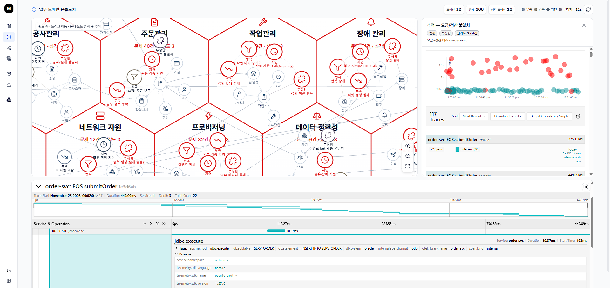
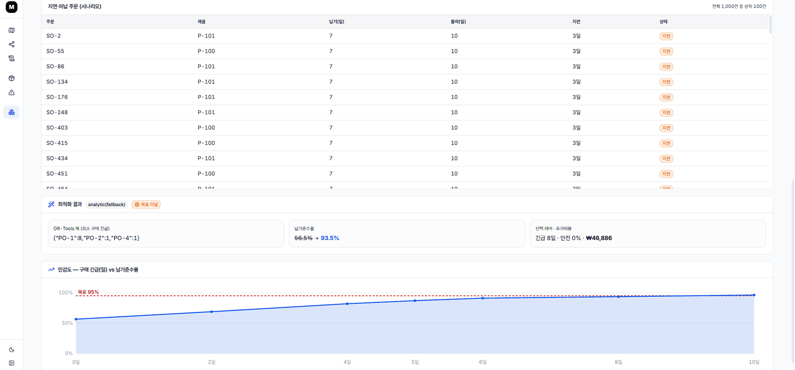
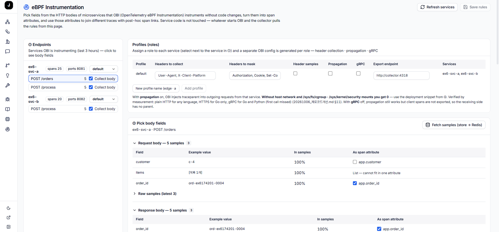
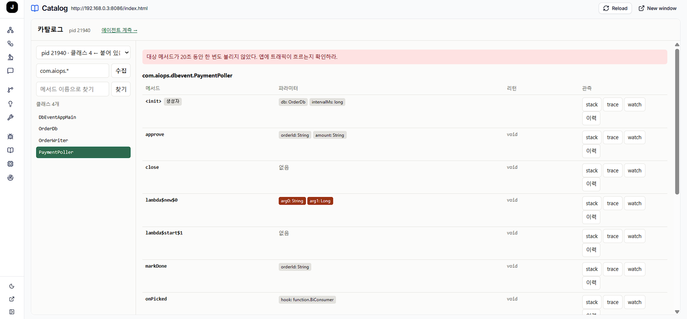

1. Why Do AIOps and the Technical Ontology First
A business ontology is more complex than a technical ontology. The causes are more varied, and the range of required actions is wider. So a natural question arises — "Then do we have to build a separate business ontology, from scratch?"
JuneAI's answer is "no." There is no need to build the technical ontology and the business ontology separately. Because the two are ultimately the same process, solving the same kind of problem — bottlenecks, delays, shortages.
- No complex, expensive data platform is needed. There is no reason to stand up a new heavy platform that brings complex decisions and modifications every time.
- What you need is a fast, affordable, reliable ontology and agents. Leave the running systems as they are, and layer thinly on top.
The AIOps and technical ontology are built cheaply and quickly, so you can focus more on the business ontology. You cut repetitive work, reduce cost, and save effort — and spend the budget and time you save on what matters more.
💡 The reason to shore up the technology first is simple. The "problem recognition → cause analysis → solution proposal" backbone that has been proven in the technical ontology is reused as is for business. Business adds "what to choose" on top.
2. Technical Problems and Solutions Are "Bounded" — So Reasoning Is Easy
The problems that technical ontologies and AIOps address boil down to a handful of kinds. The types are fixed, so they are at a level that AI can readily reason about.
Common Technical Problems
- Performance degradation · traffic increase · processing-time delay
- Service errors · resource shortage · configuration changes
Common Actions
- Scale-out (adding servers) · resource expansion · restart
- Rollback (reverting to a previous version) · parameter changes
Both the problems and the solutions sit within a fixed scope. Like "got slower → add servers" or "an error occurred → roll back," cause and remedy can be joined up relatively clearly. This is why a technical ontology can become autonomous quickly.
3. Business Differs by Industry and by Task
The world of business is a different matter. Depending on the industry and the task, both the problems faced and the ways of handling them vary widely.
For example, suppose you analyze the causes of delivery delays, stock shortages, and price fluctuations. It is not as complex as technical cause analysis. But there is a decisive difference —
Even for the same "delivery delay," the APIs to call and the DB tables to look into are entirely different depending on which application is used. A place running SAP, a place integrated via TIBCO, and a place using an in-house system are all different.
In other words, even when the nature of the problem is similar, the location and shape of the data that reveals it differ by industry and by task.
4. Same Theme, Different Stage
Whether technical or business, the themes you ultimately face converge on bottlenecks, shortages, delays, and changes. And the fact that you analyze the cause and propose a solution with an ontology and agents is identical too.
The difference is that the themes a business ontology and agents must handle are far more varied, broader, and harder to standardize. Even if they are not as specialized and complex as a technical ontology, the dynamic ontology-and-agent composition that changes every time, by industry and by task, is itself a heavy burden.
| Category | 🖥️ Technology · AIOps | 🏭 Business |
|---|---|---|
| Kinds of problem | Bounded, well-formed — performance, traffic, delay, errors, shortage, configuration | Varied, differs by industry — delivery delays, stock shortages, price fluctuations … |
| Data location | Mostly standard (metrics, logs, traces) | APIs and DB tables differ by application |
| Actions | Close to a fixed remedy — scale-out, expansion, restart, rollback, parameters | Many options, and you must "choose" one of them |
| Characteristics | Bounded scope → reasoning and autonomy are easy | Broad and hard to standardize → simulation is needed |
| What's needed | Automated reasoning → autonomous action | Reasoning + simulation → decision-making |
5. That's Why Business Needs "Simulation"
In technology the remedy is nearly fixed, as in "if it's slow, add more." But business has several options, and you must choose one. Whether to place an urgent order, use an alternate supplier, ramp up production, or renegotiate the delivery date — each carries a different cost and a different outcome.
So for business agents and ontologies, simulation is the key. You must predict in advance how a user's decision affects the ontology, and what the result of that change will be. To pick one among many options, you have to be able to run it first (what-if), see the result, and then decide.
Problem Recognition
Capture a business problem such as a delivery delay in the ontology
Cause Analysis
Trace the root cause to find which supply or production stage is the bottleneck
Option Simulation
Predict the outcome of each option — urgent order, production ramp-up, delivery renegotiation
Decision-Making
Compare outcomes (on-time delivery rate, cost) and choose the best option
🔮 This is the idea of the digital twin. Without touching the real business systems, it creates a virtual twin on top of the ontology and safely runs "what happens if we change it this way?" in advance. JuneAI, as in its SAP delivery-delay simulation, links purchasing and production to show the results of a decision in numbers.
What the Simulation Verifies — the "Causality" Between Problems
The purpose of simulation is not merely to predict KPIs. Its core is to verify the causal relationships between problems connected through the ontology. A single bottleneck or delay does not stay put — it spreads to other problems along loosely coupled systems and operations.
So JuneAI composes as broad a stretch of the process as possible into one, relates the scattered problems to one another, and draws lines of causation between them. Once they are woven together, two things become visible —
- Propagation — by what path a given problem spreads to others (e.g., the "balloon effect," where hastily scaling up one system saturates the downstream).
- Resolution — which point, when changed, resolves the connected problems together, and whether there are side effects.
🧩 Going further, the JuneAI digital twin "outputs" the causal relationships between problems as an ontology and "simulates" it. Rather than viewing problems one at a time, it reveals how they are interwoven as a picture, and before deciding, it runs "what happens over there if I change this part" in advance. In this process, a problem's impact (how far it spreads) and change management (what to change, and how) are handled together, naturally.
On top of this, JuneAI adds Observability. By calibrating the simulation with traces and events observed from the real systems, alternatives can be compared with numbers close to the real environment — not mere assumptions. In the end, the JuneAI digital twin is composed of three things used together — ontology (structure and causality), simulation (prediction of the future), and observability (real-measurement calibration) — and it is precisely here that the business ontology and the technical ontology become one.


Technical and Business Ontologies Become One — Telecom Operations as an Example
The AIOps technical ontology described in the earlier ontology article is combined into one with the telecom (OSS) business ontology shown above. Telecom operational domains — equipment activation, construction management, order management, work management, fault management, billing — rise as honeycombs, and in the honeycombs right beside them the technical ontology is output as causal relationships. Each individual problem can then be analyzed in detail through traces and events.
Once the two mesh, the screen does more than show a "list of problems." It outputs the problems arising between operations as their mutual "causal relationships" — drawing lines that show which operation's delay triggered which operation's bottleneck, and where a domain's inconsistency propagated.
So the flow of cause analysis is the same whether technical or business: pick a problem, follow the connected nodes, and arrive at the root cause — only the detailed implementation differs.






6. In Summary — From Technology to Business, on One Backbone
- Technology first, business on top — the proven backbone of AIOps and the technical ontology is reused as is for business.
- No need to build them separately — technology and business are ultimately the same process of solving bottlenecks, delays, shortages, and changes. Instead of a heavy, expensive data platform, a fast, affordable, reliable ontology and agents are enough.
- Business is more varied — even when the nature of the problem is similar, the APIs and DB tables differ by industry and app, making it hard to standardize.
- That's why simulation — in business, where there are several options, you run the outcome in advance before deciding and choose the best option.
JuneAI connects technology to business with one ontology-and-agent backbone, and adds simulation (a digital twin) to business decision-making. Without stopping operations, it sees the outcome before making a change.